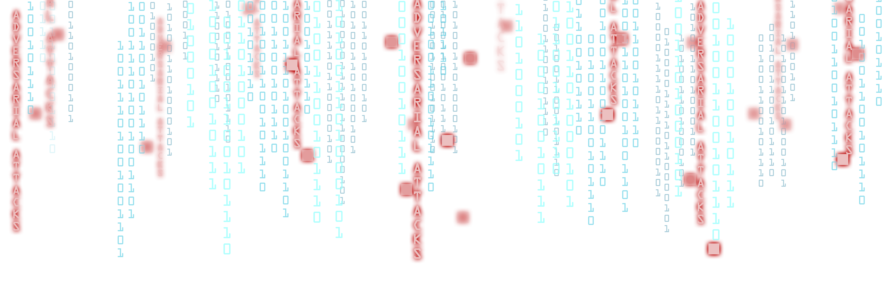
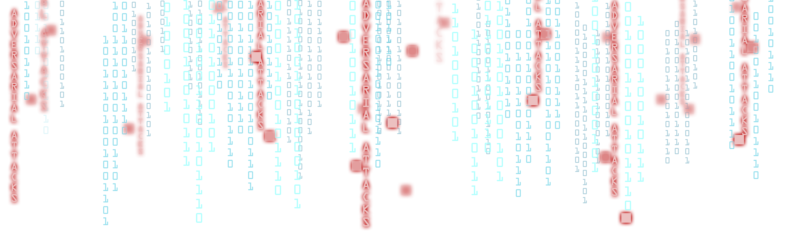

Meetings/Events
Talk: Probabilistic Modeling for 3D Human Pose Estimation
 May 5, 2021
May 5, 2021
 1:30 - 2:30 pm
1:30 - 2:30 pm
 https://upenn.zoom.us/j/95221282238
https://upenn.zoom.us/j/95221282238
Speaker: Nikolaos Kolotouros
Title:Probabilistic Modeling for 3D Human Pose Estimation
Abstract: This talk will focus on the problem of 3D human pose estimation from 2D evidence. Although this is an inherently ambiguous problem, the majority of the recent works avoid the uncertainty modeling and regress a single 3D pose value for given input. In contrast to that, in our work, we propose to embrace the reconstruction ambiguity and we recast the problem as learning a mapping from the input to a distribution of plausible 3D poses. Our approach is based on the normalizing flows model and offers a series of advantages. For conventional applications, where a single 3D estimate is required, our formulation allows for efficient mode computation. Evaluating our conditional distribution using the mode, our model achieves results comparable with the state-of-the-art among deterministic single-mode regression models. Simultaneously, since we have access to the likelihood of each sample, we demonstrate that our model is applicable in a series of downstream tasks, where we leverage the probabilistic nature of the prediction as a tool for more accurate estimation. These tasks include reconstruction from multiple uncalibrated views, as well as human model fitting, where our model acts as a powerful image-based prior for mesh recovery. Our results validate the importance of probabilistic modeling, and indicate state-of-the-art performance across a variety of settings.
Talk: From Sticky Mittens to Uber Actions: A Reinforcement Learning Framework
 April 14, 2021
April 14, 2021
 1:30 - 2:30 pm
1:30 - 2:30 pm
 https://upenn.zoom.us/j/95221282238
https://upenn.zoom.us/j/95221282238
Speaker: Souradeep Dutta
Title: From Sticky Mittens to Uber Actions: A Reinforcement Learning Framework
Abstract: In this project we explore ways to apply lessons from early childhood development in the domain of reinforcement learning. Researchers observed that temporarily enhancing the abilities of children to perform a certain task led to an improved learning experience in infants. This refers to the 'sticky mittens' experiment. In this project we apply this to a reinforcement learning setting. Here, we augment the abilities of the learning agent with useful enhancements called uber actions. Following which, the uber actions are flattened as options in the original environment. We report on an initial set of experiments in a minecraft-like learning environment called 'craft'.
Talk: On the statistical foundations of adversarially robust learning
 October 28, 2020
October 28, 2020
 12:10 - 1:10 pm
12:10 - 1:10 pm
 https://upenn.zoom.us/j/96028410597?pwd=bHdmS29MbGQ5QllLWEFWQTZ1SUtSdz09
https://upenn.zoom.us/j/96028410597?pwd=bHdmS29MbGQ5QllLWEFWQTZ1SUtSdz09
Speaker: Edgar Dobriban, Department of Statistics
Title: On the statistical foundations of adversarially robust learning
Abstract: Robustness has long been viewed as an important desired property of statistical methods. More recently, it has been recognized that complex prediction models such as deep neural nets can be highly vulnerable to adversarially chosen perturbations of their outputs at test time. This area, termed adversarial robustness, has garnered an extraordinary amount of attention in the machine learning community over the last few years. However, little is known about the most basic statistical questions. In this talk, I will present answers to some of them.
This is joint work with Hamed Hassani, David Hong, and Alex Robey.
Invited Speaker: Pooyan Jamshidi
 Sep 14, 2020
Sep 14, 2020
 12:00 pm
12:00 pm
 https://upenn.zoom.us/j/95221282238
https://upenn.zoom.us/j/95221282238
Speaker: Pooyan Jamshidi, an Assistant Professor at the University of South Carolina
Title: Ensembles of Many Diverse Weak Defenses can be Strong: Defending Deep Neural Networks Against Adversarial Attacks
Abstract: Despite achieving state-of-the-art performance across many domains, machine learning systems are highly vulnerable to subtle adversarial perturbations. Although defense approaches have been proposed in recent years, many have been bypassed by even weak adversarial attacks. Previous studies showed that ensembles created by combining multiple weak defenses (i.e., input data transformations) are still weak. In this talk, I will show that it is indeed possible to construct effective ensembles using weak defenses to block adversarial attacks. However, to do so requires a diverse set of such weak defenses. Based on this motivation, I will present Athena, an extensible framework for building effective defenses to adversarial attacks against machine learning systems. I will talk about the effectiveness of ensemble strategies with a diverse set of many weak defenses that comprise transforming the inputs (e.g., rotation, shifting, noising, denoising, and many more) before feeding them to target deep neural network classifiers. I will also discuss the effectiveness of the ensembles with adversarial examples generated by various adversaries in different threat models. In the second half of the talk, I will explain why building defenses based on the idea of many diverse weak defenses works, when it is most effective, and what its inherent limitations and overhead are. Finally, I will show our recent advancement toward synthesizing effective ensemble defenses automatically by identifying complementary weak defenses over the induced space of weak defenses using a combination of search and optimization.
ARO-MURI Kickoff Meeting
 June 30, 2020
June 30, 2020
 9 AM - 12:30 PM
9 AM - 12:30 PM
 Remote
Remote
Internal Prep Meeting (for MURI Kickoff)
 May 21, 2020
May 21, 2020
 3 PM - 4 PM
3 PM - 4 PM
 Remote
Remote